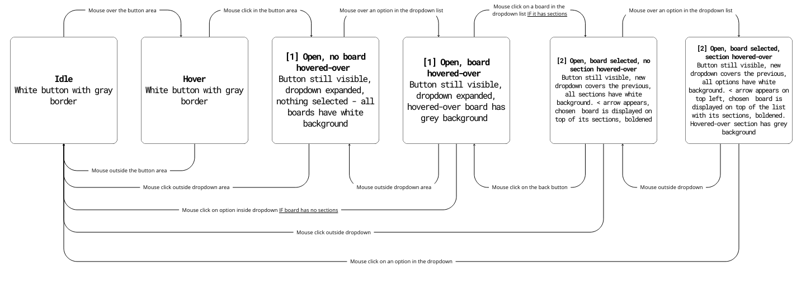
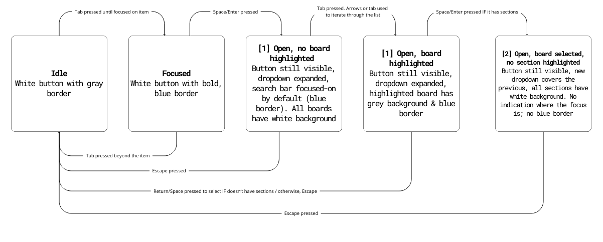
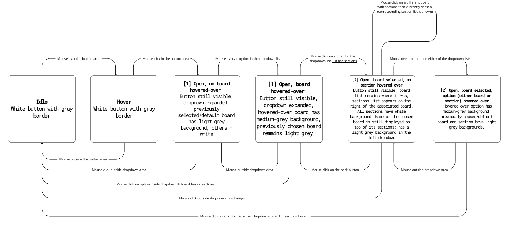
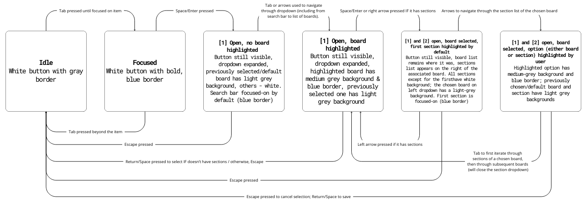

The case study below focuses on the accessibility of dropdown menus, aiming to improve them for all users, including those using keyboard, mouse, touchscreen, or screen readers. By evaluating - and potentially reworking - current implementations, the goal is to enhance efficiency & accessiblity of dropdowns without sacrificing their functionality.
1. INPUT


| FARFETCH (dropdown menu for clothing item categories) | PINTEREST (dropdown menu for board selection when creating a pin) | GOOGLE CALENDAR (dropdown menu for choosing a calendar) | |
|---|---|---|---|
| Mouse/Touchpad | Hovering over an item in the main menu highlights names of others and expands a dropdown submenu specific to that item. Moving the mouse away from dropdown area collapses it. Clicking an item in the main/dropdown menu redirects to its subpage and closes the dropdown; chosen item is indistinguishable post-redirection (uniform text color). Hovering over a submenu item underlines its name. Can select and copy any text. Learnable: Hover opens the menu, choosing an item/moving mouse away collapses it (intuitive). Memorable: Consistent layout and visual feedback (underlines in dropdown on hover, darker color in navbar on hovered/selection prior to redirection). Efficient: Hovering enables quick sub-category previews without extra clicks. | Clicking ‘choose a board’ button opens a dropdown list with user’s boards. Search bar on top of the list is focused by default. Clicking on a board without sections selects it and collapses the list. Clicking on a board with sections expands a list of sections that covers the board dropdown. Clicking an arrow on top left allows to return to board selection. Clicking on section selects it, updates the text on the button, and collapses all dropdowns. Learnable: boards with sections have a side arrow on their far right; board will gain a gray background on hover (intuitive). Efficient: search speeds up selection (scrolling possible, but takes time with many boards). The second list opens on top of the previous, no need to search on the page for it. Memorable: Alphabetical list and consistent layout (first search bar, then boards/sections, then create a board/section). Can select any text within dropdown area, but on mouse release, it'll be treated as selection. | Clicking on calendar section (default selection displayed) expands a dropdown list of user's calendars. No indication that the button provides that function - only an arrow implying an expandable element - poses a learning curve. Prev selected calendar has a darker background. On hover, calendar background darkens more. On click outside of dropdown area, it collapses. On hover outside of dropdown area, stays in place. Learnable: visible scrollbar on the right, easier to understand that more options are available; dark background color of the previously chosen calendar. Efficient: calendars have color codes on their left which simplifies searching. Selection collapses menu quickly. Memorable: consistent visual cues across event property dropdowns. Can select text, but on mouse release, that calendar will be selected. |
| Keyboard | Limited support. Limited support. Tab can enter the menu but only selects “New In” before skipping to search. Arrow keys navigate menu items; Enter/Space/Down opens their dropdowns (can't navigate directly into their page), Escape/Up closes them. Enter selects a submenu item. To move between dropdown rows, must use tab (arrows will change the general menu item). Can't select specific text, only all (command+a). Can't navigate back to the main page without using the browser's back button. NOT Learnable: arrows and tab for navigation (confusing). Memorable & Efficient: keyboard shortcuts once known (arrows/tab for navigation). | Tab navigates the board list, arrows iterate through options (darker background on focus). Can't choose a section with tab (focus remains on board dropdown, despite it being no longer visible). Escape returns to the previous dropdown list if in sections or collapses the dropdown if in boards. Enter/Space selects an item. Can't select specific text. Learnable: intuitive navigation between boards. Memorable: visual feedback (highlighted focus). Efficient: can quickly iterate with arrows or tab. | Tab to navigate into the dropdown calendars list, iterate through them with arrows (not tab). Learnable: bold blue border on focus. To select, space or enter. Learning curve - unexpectedly, once list of calendars is opened, tab closes dropdown instead of focusing options. Can't select text. |
| Touch | Dropdown expands from the bottom, covering all but menu items. Clicking "Brands" opens a submenu with options to select individual brands ('your go-to brands') or view a list of all brands ('brands a-z'). If the latter, can choose multiple brands - selected brands are marked with a checkmark. Long touch changes item background into light gray. To confirm selection, must click "Shop (x) Brands" which redirects to a page with items from selected brands. Inefficient: can't preview items, must click to see subcategories. Memorable: order of elements in navbar. Learnable: checkmarks on the right, menu still visible on the bottom after dropdown expands.Efficient: can quickly remove/add brands from selection. | Tapping "Pick a board" opens a full-page dropdown, hiding the previous property menu. To exit, tap the top-left arrow. Selecting a board without sections closes the menu and returns to "Create Pin." Boards with sections open a secondary list which collapses all dropdowns on section selection. Long-press doesn't change color of a board/section. Can't search for section on mobile (Inefficient: must scroll to find section on mobile). Not learnable: pick a board button is no longer visible on click, user can't know what they've pressed into. Memorable: navigation is fairly intuitive, as the dropdown design is consistent across devices. | Tapping the default calendar opens a partial-screen dropdown, tapping outside or selecting collapses it. No text indicates it's a selection menu - only two arrows suggest expandability.The selection is automatically saved once the dropdown collapses. Can scroll, can't selected text. Learnable: users know where they've navigated into. Memorable: checkmark on the left of the selected calendar. Efficient: can quickly collapse the list by clicking outside of it. Not learnable: easy to click out of the list, no explicit 'close/x' button. |
Google Calendar is the most accessible for input - provides clear visual feedback with a background change/blue border on web for focused items and uses familiar keys like arrows, Enter, and Space for selection. Unlike Pinterest, where Tab navigation skips over board sections & doesn't distinguish between previously chosen/hovered over/unselected items, GCal consistently lets users iterate through all options with arrows, reminds them of the scroll option with a visible scrollbar, and maintains visual cue of the previously selected calendar. Farfetch falls behind with limited Tab support and inconsistent focus behavior.
2 . OUTPUT
| FARFETCH | GOOGLE CALENDAR | ||
|---|---|---|---|
| Color/Style | All menu items share the same color and blend into the site’s background, making them indistinguishable from static elements. Hovering over an item lightens other menu names and expands a dropdown, underlining elements within it on hover. Once redirected, the selected item isn’t visually distinguished. On mobile, pressing an item darkens its background and symbol, and selected brands show a checkmark on the right and appear at the top of the list with a removable 'x'. | The 'choose a board' dropdown displays boards with icons on the left, but the arrow always points down, regardless of expansion. The selected board doesn’t differ in color or style from others, making it hard to identify. Hovering darkens the background; selecting collapses the dropdown. On mobile, the selected board remains visually identical to others, , which makes it confusing and inefficient, as it requires memorizing the initial board selection. | Hovering over the calendar dropdown darkens its background, and the arrow turns light blue when expanded—providing a clear visual indicator. The hovered or selected calendar also gets a darker background. After selection, the arrow stays blue but points down, suggesting focus. On mobile, calendars are color-coded next to their names, making identification efficient, and the selected calendar shows a checkmark—an effective, learnable cue not present on the desktop. |
| Text | On redirect, the header updates to the category name clicked in the dropdown—helpful for first-time users. On mobile, selecting a menu item expands a category-specific dropdown with the item’s name at the top. In the 'brands A-Z' page, the top label stays as 'brands' instead of the specific subcategory (confusing). After selecting brands, they appear listed at the top, and a 'shop x brands' button updates based on the number of selections, with a 'clear' button also appearing. If too many brands are selected, a 'show more' button expands the list, changing to 'show less' when clicked. | The board selection button is clearly labeled ('board' on web, 'pick a board' on mobile). When expanded, 'save to' text appears at the top. If a board with sections is selected, the text updates to 'choose section'. Once a board is chosen, the button updates to display the selected board’s name. | The calendar dropdown button shows only the currently selected calendar’s name with an arrow—no label indicating its purpose. Expanding the list turns the arrow upward. On mobile, the button also displays the associated email above the calendar list, a feature missing on web. On calendar selection, button text updates to reflect the change, but stays the same on hover. |
| Focus Order (Web) | Tab focuses only on the first menu item ("new in") and then jumps to the search bar on the far right. Navigation between general menu items requires left/right arrows, and dropdowns expand with the down arrow. Items can be selected with return or space, but selecting always expands the dropdown—direct navigation to subpages isn’t possible. In dropdowns, tab moves to a second row of lists, but arrows move to a different general menu item instead. This fragmented navigation and lack of on-site guidance make the interface inefficient and difficult for inexperienced or visually impaired users.There's also no explanation provided on the site, so most of the shortcuts must be learned via trial and error. | Tab focuses on the 'board' property of a pin; return/space expands the dropdown of boards/sections. Users can iterate with tab or arrows and select with return/space—an efficient, familiar focus order. However, search button within the board list traps arrow navigation into its own recent searches, which aren't visible beforehand - confusing to users. To focus out, tab to refocus on the board list. | Tab focuses on the calendar dropdown button; up/down arrows navigate between calendars, and return/space selects one. Using tab inside the list moves focus to another calendar property. I believe this output is fairly understandable - although it requires using multiple keyboard shortcuts to perform a task, it's cohesive between different calendar properties (i.e., switching between the busy/free option can also only be performed with arrows rather than tab). |
| Screen Reader (Web) | With Mac ScreenReader, focusing on the Farfetch board dropdown reads “new in; collapsed button.” Upon pressing Space, the dropdown expands, and VoiceOver correctly focuses on the first item. Navigation between general menu items is done using right/left arrows, and up/down arrows open the corresponding dropdowns with VoiceOver reading the items inside. However, pressing right/left arrows while a dropdown is expanded moves focus to another general menu item, which isn’t standard behavior. | Mac ScreenReader reads "choose a board button group" when focused on board button but doesn't indicate that it can be expanded like Farfetch. After activating the button with Ctrl+Option+Space, focus shifts to search bar at the top of the list, with no guidance on how to navigate to the board list (requiring prior knowledge). Once in the board groups, VoiceOver correctly reads each board's name and specifies if it has sections. However, when navigating into the section list, VoiceOver incorrectly remains focused on the dropdown board list, which is now hidden by the sections, making it impossible to read the section names as Tab navigation doesn't work, and arrows fail to focus on them. | Mac ScreenReader announces "list box popup," "menu popup combo box," and the name of the default/previously selected calendar when focused on the button. Compared to Farfetch's clear "collapsed button" label, this phrasing feels more complex. Once in the dropdown list, VoiceOver correctly reads the calendar names and indicates whether they are selected, making navigation through the list easier than Pinterest's implementation. |
3.1 STATE MODELS
The flowcharts below present the state models of Pinterest's board selection dropdown — a component I found myself using the most. I focused on improving clarity, efficiency, and accessibility by creating an intuitive layout that makes it faster to switch between sections and easier to distinguish between selected, hovered, and unselected states.
Original
Mouse User
Keyboard User
Problems:
No visual distinction between selected and unselected states: Only the hover state changes the background to grey — all other boards look identical, making it difficult to recognize the previously selected board or section.
Inefficient navigation: Selecting a board with sections closes the board list and opens the section list, requiring users to reopen the board menu to switch boards — adding unnecessary clicks.
Accessibility issues: Screen reader users get no feedback on selection state within sections, as it’s impossible to navigate them via tab.
Revised
Mouse User
Keyboard User
Improvements:
Visual clarity (learnability/memorability): The previously selected board is highlighted with a light grey background, while the hovered board/section uses a medium-grey background, making selection states obvious at a glance. Clearer visual cues make it easier for new users to understand the interface, and reinforce navigation patterns.
Faster navigation (efficiency): The section list now opens to the right of the board list, keeping both visible and reducing clicks needed to switch between boards/peek their sections. The side-by-side list layout also improves memorability as it simplifies remembering the navigation flow and where things are.
Better keyboard support: Users can now navigate sections with Tab and up/down arrow keys, and open/close board sections with left/right arrows, speeding up navigation for knowledgeable users without complicating it for new users.
Enhanced accessibility: Screen reader users can now focus on sections (previously impossible) and navigate through them via tab. Stronger visual contrast improves usability for users with screen readers or visual impairments, while the side-by-side layout reduces cognitive load by minimizing context switching.
3.2 COMPONENT REDESIGN
Pinterest's redesigned board and section selection dropdown embedded above (otherwise, access here). The new layout is more intuitive, with a clear visual distinction between selected and unselected states, and a more efficient navigation flow. The section list now opens to the right of the board list, making it easier for users to understand which board they've chosen. It also increases efficiency of switching into a different board (or displaying its sections), as it only requires clickin on it within the left list, instead of navigating back to the all-boards list. Previously chosen board has now a light grey background, and a hovered-over board/section has a medium gray background, improving learnability (no need to remember the previous selection). Keyboard users can now navigate through sections with up/down arrows, open/close sections with right/left arrows, or progress beyond the chosen board's sections into those of the subsequent board in the main list with tab. This redesign prioritizes desktop users (whether keyboard or mouse), as the side-by-side layout couldn't be implemented on mobile.
4. REFLECTION
The components I observed performed well in terms of usability by incorporating efficient navigation patterns (Farfetch — quick movements between general menu items and their corresponding dropdowns; Google Calendar - immediate collapse of the dropdown list on calendar selection). As for visual feedback, the calendar dropdown button did well — the arrow changed to light blue when expanded and remained blue after selection, indicating focus. The background of a previously chosen calendar remained darker than the rest, and would be further darkened on hover. Similarly, the color coding of calendars and icons of boards/sections (Pinterest) allowed for efficient identification without needing to reread names. In my redesigned, I've incorporated both aspects, without doing so at the expense of accessibility. I retained the clear visual cues (darker background for selected items, medium grey for hovered-over items) and improved navigation by adding keyboard shortcuts and side-by-side list layout. This way, users can quickly switch between boards and sections without relying on complex keyboard shortcuts or memorizing the interface. I also kept symbols of boards and sections, to allow users to easily find one sought-after, and changed the rotation of the 'expand' arrow to indicate the state of the dropdown.
However, the original components often prioritized speed and ease of use for mouse users at the expense of accessibility. Quick navigation was largely designed for mouse interactions or required prior knowledge of shortcuts that weren’t clearly provided on the site. Additionally, visual contrast wasn’t always strong enough for new users/users with visual impairments o understand their actions — for example, Pinterest’s "Choose a Board" section lacked clear feedback on selected items. In my redesign, I addressed these issues by enhancing the contrast between selected and unselected states and simplifying keyboard navigation. Users can now move easily between elements using either the arrow keys or the tab key, making the interface more intuitive and fully compatible with screen readers — resolving Pinterest’s confusing out-of-focus issue.It also improves on efficiency — Pinterest’s section selection made it demanding to switch between boards, especially for users with motor impairments. My side-by-side layout simplifies this process, reducing the number of keyboard clicks needed to view and switch boards quickly without relying on complex keyboard shortcuts.
In Kat Holmes' definition, a "mismatch" occurs when the design of a system doesn’t meet the needs of its users. My changes addresses that divide between the functionality provided for traditional mouse-based interactions and the needs of users with motor impairments. In the original design, mouse users could freely choose both a board and a section, while keyboard users could only navigate through boards. By adding keyboard shortcuts (left/right arrows to open and close the section list, up/down arrows to move through items), my design ensures that users with limited mobility can navigate the interface as easily as those using a mouse.
Negative impact: Farfetch’s general menu presents a significant accessibility issue, as its color blends into the background of the page, making it difficult for users with visual impairments to distinguish the menu as a dropdown rather than a static site component. Keyboard navigation between menu elements is inconsistent — users must first "tab" into the initial item and then switch to arrow keys, while moving between list items only works with the tab key. This inconsistency creates confusion and forces users to memorize non-obvious shortcuts. Positive impact: On mobile, however, the visual cues are more consistent, and the dropdown is intuitive to navigate. The search bar under the "brands" category also improves efficiency by allowing users to quickly find specific companies — an option absent from the desktop version, which only allows filtering by the first letter of the brand’s name. These design choices clearly prioritize mouse and mobile users, resulting in a diminished experience for keyboard and screen reader users who must rely on complex and inconsistent navigation methods.